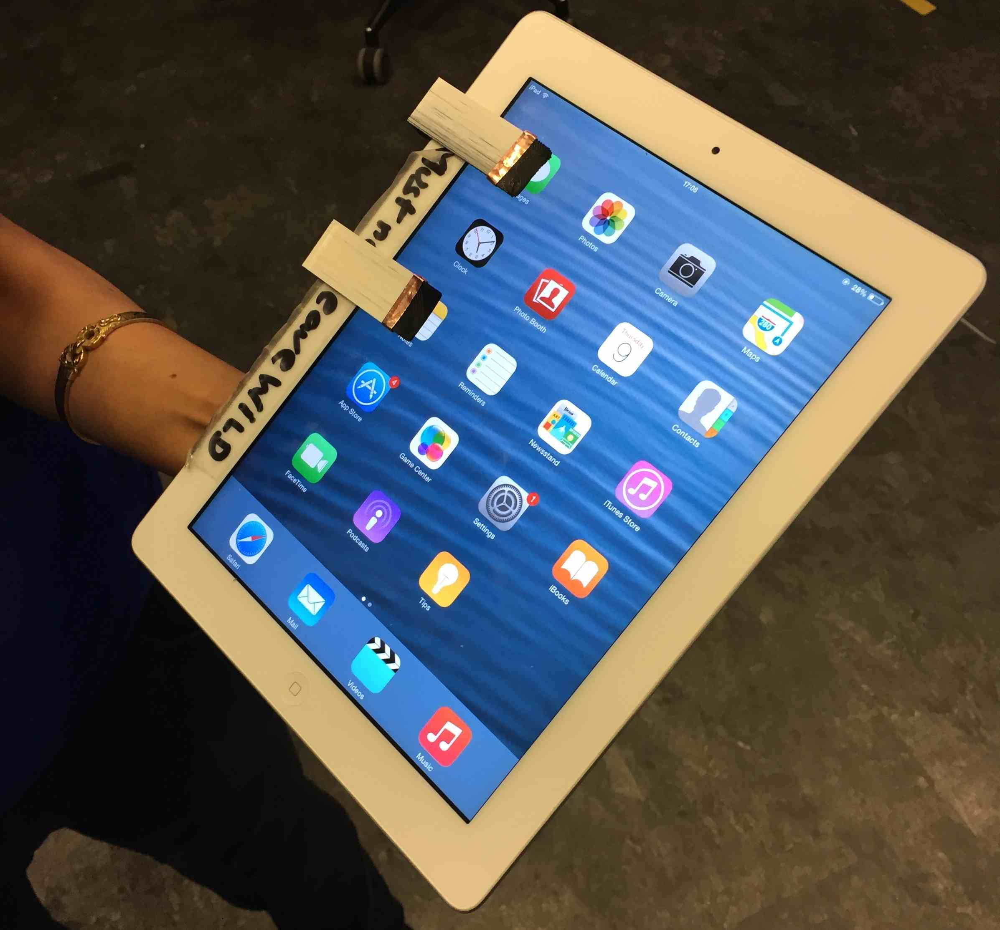

<main class="">
<div class="container">
  <table cellpadding="10">
  <tr>
    <td width="30%" align ="left" > <a href="#" id="pop"></a>
      <p style="margin: 0px 20px">iPad clips</p></td>
    <td width="40%" align ="justify" valign="top"  ><h3>iPad clips: Physical controls for eyes-free interaction</h3><p><i>On multi-touch surfaces such as smart phones and tablets, it is extremely difficult to have eyes-free interaction. This requires the users to pay complete attention to touch screen surface. Dynamic affordance with physical objects can create useful interactions with such multi-touch surfaces. I designed easy to carry clip buttons that can be detached and attached to any touch surface device easily. These clip buttons are 3D printed with conductive plastic elements that in turn provide touch interaction with the multi-touch surface. These buttons provide physical cues which make it easier to reach to the target.

    Please check this <a href="https://www.dropbox.com/s/xaep9e8iwt22joh/clips1.MOV?dl=0"><font color="blue">video</font></a> for the working prototype.</i></p>
  <br>
  </td>
</table>

    </div>
  </main>